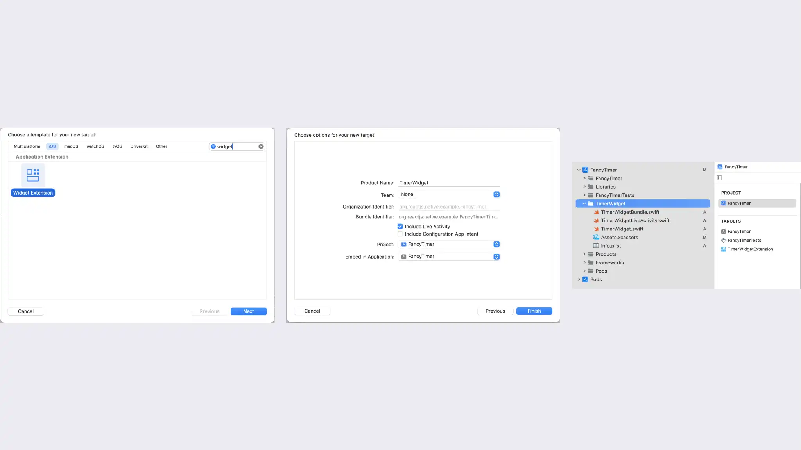
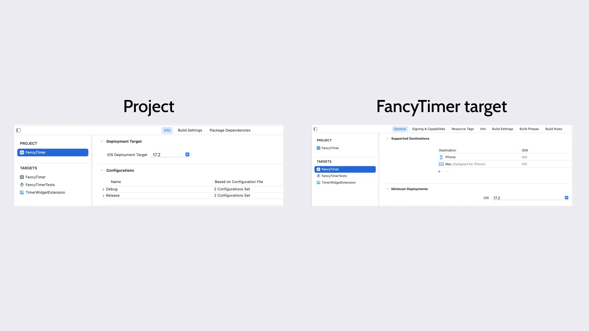
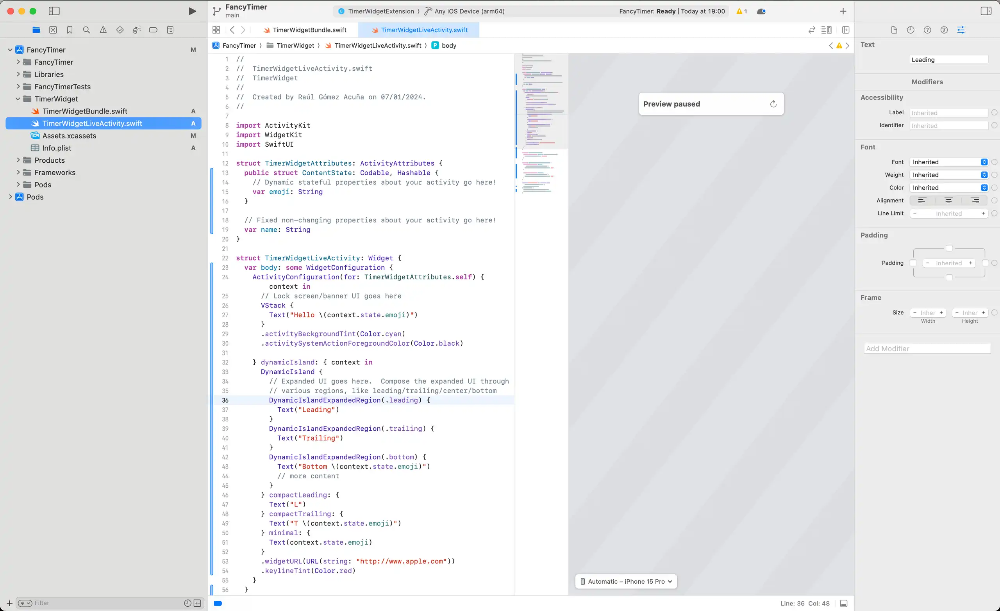
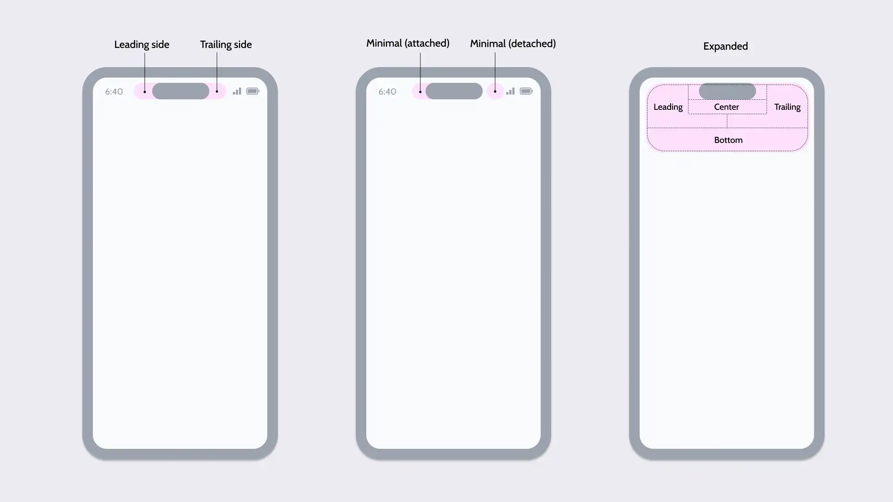
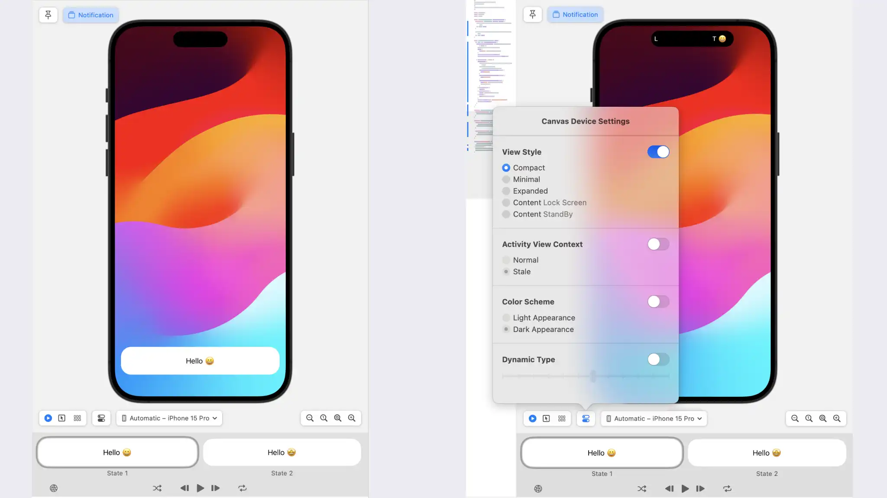

Live Activity 簡單的說 iOS Live Activity 讓我們可以顯示一些當前的即時資料而不用開啟應用程式，顯著的提升用戶體驗。首次支援是在 iOS 16.1 和 iPadOS 17 ，重點是可以在鎖定螢幕、待機畫面、以及動態島即使更新顯示資訊，減少反覆開啟應用程式的次數。
Lock Screen 鎖定螢幕 - 喚醒 iPhone 時看到的畫面，這裡可以顯示通知 Push Notification 和 Live Activity。
Stand By 是 iOS 17 的時候加入的，在充電時可以顯示的區塊。
Dynamic Island 動態島則是 iPhone 14 Pro 開始新增的功能。
進一步我們釐清在 iOS 14 加入的 Widget 和 Live Activity 的差別。Live Activity 以提供即時資訊為核心例如追蹤某個事件的狀態，比賽分數、Uber 司機是否抵達等資訊。Widget 比較合適的情境是提供跟短時間即時性比較沒有那麼強烈關係的資料例如天氣等。
建置第一個 Live Activity 在 React Native 專案要支援 Live Activity 我們無法避免會需要更多原生開發的知識，後續我們會逐步教學。
建立專案
1 $ npx @react-native-community/cli init Timer
建立 Widget Extension
使用 Xcode 開啟專案1 $ open ios/Timer.xcworkspace
File > New > Target 選擇 Widget Extension
輸入 Widget 名稱「TimerWidget」
勾選「Include Live Activity」，取消「Include Configuration App Intent」
點擊完成
點擊「Activate」Extension scheme
為了簡化我們的實作範例，將 Project 的「iOS Deployment Target」調整為 17.2。Targets 底下我們的應用「Minimum Deployments」也調整成 17.2。若需要針對特定版本執行對應操作則參考官方說明
Info.plist 設定「Supports Live Activities」為 YES
刪除 TimerWidget.swift
更新 TimerWidgetBundle.swift 移除 TimerWidget()
預覽
開啟 TimerWidgetLiveActivity.swift
在右邊區塊點擊刷新圖示
這個動作會開始建置流程
一旦建置完成模擬器會顯示 Live Activity
如果遇到逾時錯誤可以執行 xcrun simctl --set previews delete all
認識 iOS Target 在深入之前，讓我們來瞭解一下何謂 iOS Target，釐清一些術語。在 iOS 開發中，一個 Target 本質上是一系列的設定和檔案，如那些檔案需要編譯、連結方法等。可以把 Target 當成專案中獨立的產品或元件。Target 的類型包含：
應用程式
測試
框架或函式庫
擴充插件 Extension
Swift UI 概念 在我們新增的 Widget Extension 目錄下有 TimerWidgetBundle.swift 檔案，它是進入點。
1 2 3 4 5 6 7 8 9 10 import WidgetKitimport SwiftUI@main struct TimerWidgetBundle : WidgetBundle var body: some Widget { TimerWidget () TimerWidgetLiveActivity () } }
最上方匯入了 WidgetKit 和 SwiftUI 。WidgetKit 提供建立、設定、顯示 Widget 和 Live Activity 的工具。SwitUI 則是建立使用者介面的框架
@main 註記程式的進入點struct TimerWidgetBundle 宣告了結構 struct 名稱為 TimerWidgetBundle 。Swift 中的 struct 是一個程式的建置區塊。和 C 的 struct 不同它不單純只能儲存資料。Swift 的結構可以有方法，函式和建構子。實際上非常類似 Class 但是不能被繼承。WidgetBundle 為協定類似其他語言的介面 Interface，定義了一個擴充插件包必須提供的東西。本身是 Widget 和 Live Activity 的集合。用來將 Widget 和 Live Activity 群組。struct TimerWidgetBundle: WidgetBundle 將上面 2 個東西組合起來，這一行程式表示 TimerWidgetBundle 具備 WidgetBundle 的行為和功能。這就是 protocol-oriented 程式設計的體現。一個型別可以符合多個「協定」的描述。若 TimerWidgetBundle 遵循 WidgetBundle 協議，那麼就須提供 body 屬性
var body: some Widget 宣告了 body 屬性，some 關鍵字類似於 TS 的泛型，也就是只要使用的型別有實作 Widget 協議即符合some Widget {} 後面的大括號用來定義計算屬性的程式內容。裡面的 TimerWidget() 和 TimerWidgetLiveActivity() 就是符合 Widget 協議的 struct 。它們就是 Widget 和 Live Activity。
解析 Live Activity 當我們建立 Widget Extension，Xcode 會自動幫我們產生 TimerWidgetLiveActivity.swfit 並提供基本的範例。



模擬畫面是由程式中的 #Preivew 驅動的。
Data Model Activity Attributes 是 Live Activity 的核心重點，宣告包含靜態和動態資料來組成 Live Activity 的畫面。一般來說我們會在這裡組織需要的狀態。重點是須使用 ActivityAttributes 協議
1 2 3 4 5 6 7 8 struct TimerWidgetAttributes : ActivityAttributes public struct ContentState : Codable , Hashable var emoji: String } var name: String }
ActivityAttributes 協議必須實作內部 struct ContentState ，ContentState 結構用於封裝可變動的資料，一般 ActivityAttributes 的屬性則是固定值。後續我們在 Live Activity 介面可以通過 context.state.emoji 或 context.attributes.name 使用。
佈局 要調整 Live Activity 的佈局和樣式我們需要遵循 Widget 協議。
1 2 3 4 5 6 7 8 9 10 11 12 13 14 15 16 17 18 19 20 21 22 23 24 25 26 27 28 29 30 31 32 33 struct TimerWidgetLiveActivity : Widget var body: some WidgetConfiguration { ActivityConfiguration (for: TimerWidgetAttributes .self ) { context in VStack { Text ("Hello \(context.state.emoji) " ) } .activityBackgroundTint(Color .cyan) .activitySystemActionForegroundColor(Color .black) } dynamicIsland: { context in DynamicIsland { DynamicIslandExpandedRegion (.leading) { Text ("Leading" ) } DynamicIslandExpandedRegion (.trailing) { Text ("Trailing" ) } DynamicIslandExpandedRegion (.bottom) { Text ("Bottom \(context.state.emoji) " ) } } compactLeading: { Text ("L" ) } compactTrailing: { Text ("T\(context.state.emoji) " ) } minimal: { Text (context.state.emoji) } .widgetURL(URL (string: "http://www.apple.com" )) .keylineTint(Color .red) } } }
上面程式碼本質上就是一個 Widget - 其內容和行為封裝在 body 屬性，該屬性回傳的型別須符合 WidgetConfiguration。
在 Swift UI 我們將需要處理很多 struct ，例如看到上面的 ActivityConfiguration(for: TimerWidgetAttributes.self) ，這句程式碼建立了 ActivityConfiguraition 結構的物件實例，Text("Hello \(context.state.emoji)") 建立 Text 結構的物件實例。
其中兩者的差別是 ActivityConfiguration 使用了具名參數 for 來設定資料模型的型別。Text 沒有使用具名參數。
「outward-facing label」外部可見標籤在 Swift 尤其 Swift UI 中這個術語指的其實就是具名參數，也就是在實例化時使用的標籤。
最佳實踐是如果參數無法很明確表示其意思時使用具名參數，如果功能明確則使用匿名/位置參數。
ActivityConfiguration 中我們很快注意到 VStack，而且它不像 Text 一樣有使用小括號 ()。VStack 也是一個 struct
1 2 3 VStack { Text ("Hello \(context.state.emoji) " ) }
Swift 支援 struct 預設參數，且可以忽略 () 也就是說上面的程式碼和下面是等價的：
1 2 3 VStack () { Text ("Hello \(context.state.emoji) " ) }
另一個問題是那麼後面的 {} 是什麼？這實際上是一個作為參數傳入的函式 - Swift Closure 。
這個 {} 是另外一個特殊語法叫作 Trailing Closure 後置閉包。和下面的程式碼等價
1 2 3 VStack (content: { Text ("Hello \(context.state.emoji) " ) })
因為 content 是最後一個參數，且類型是一個閉包。 在 Swift 中，如果一個函數的最後一個參數是閉包，你可以使用後置閉包語法。
這個後置閉包函式內部就是視圖列表，Swift UI 使用一種 DSL 來設計介面，VStack 結構就是用來產生一個列表的內容。在底層這個函式的內容是一個 @ViewBuilder 我們可以在裡面放入子元素。
1 2 3 4 VStack { Text ("Hello \(context.state.emoji) " ) Image (systemName: "star" ) }
SwiftUI 中的某些特殊函數如 VStack 、HStack、List 可以接受多個子視圖作為參數，這些函數的主要目的是組織和排列多個子視圖。我們可以直接列出要包含的視圖，如 VStack { Text("Hello") Text("World") }。
它們有些限制：
函式只能用來組織視圖
允許使用 if switch
允許使用區域變數
接著我們來進一步深入 ActivityConfiguration ，首先這個 struct 的 init 方法（建構子）接收 3 個參數：
for 此具名參數指定 Live Activity 資料模型的型別，這裡是 TimerWidgetAttributes.self。.self 指向型別本身，並非物件實例，而是型別物件或稱為 Metatype。反過來說一個物件的 .self 就會指向該物件實例。content 建立 Live Activity 視圖的閉包。這個介面會在 Lock Screen 顯示或在那些沒有動態島的裝置首頁作作為橫幅dynamicIsland 另一個閉包，在動態島建立 Live Activity
在 Swift 中的結構如果沒有定義 init 自動獲得一個初始化器例如：
1 2 3 4 5 6 7 8 9 10 11 12 struct Person var name: String var age: Int init (name : String , age : Int ) self .name = name self .age = age } } let john = Person (name: "John" , age: 30 )
在 Swift 5.3 之前，後置閉包語法只適用於函數的最後一個參數。Swift 5.3 引入了多個後置閉包功能。這些閉包會依序對應到函數的參數列表，也就是為什麼 ActivityConfiguration 可以有兩個後置閉包。
每一個閉包可以接收參數例如 content 和 dynamicIsland 的 context 參數。在 Swift 閉包語法中，in 關鍵字作為參數列表和閉包主體之間的分界。context 是 TimerWidgetAttributes 的物件實例，讓我們可以根據資料進行渲染。例如動態資料通過 context.state，靜態資料則通過 context.attributes。
ActivityAttributes 協議規範了 struct ContentState 和靜態屬性的規則，然後框架協助處理將資料放置到 context.state 和 context.attributes上。
ActivityConfiguration 物件是通過指定的資料模型型 TimerWidgetAttributes 加上 2 個閉包建立的。兩個閉包分別定義了在手機鎖定時 Live Activity 的佈局以及手機解鎖且處於動態島模式 iOS 16.1+ 的佈局

由左至右分別為 Compact, Minimal, 和 Expanded
當只有一個 Live Activity 處於活動狀態則動態島為緊湊 Compact 模式。此模式有兩個分開的元素分別在前鏡頭的頭尾 leading 和 trailing。此模式的互動包含：
當有多個 Live Activity 處於活動狀態時則進入最小模式 Minimal ，此時一個 Activity 會是掛載狀態 attached，另一個這是分離狀態 detached。類似緊湊模式點擊最小化的 Live Activity 會打開應用。長按一樣是切換為展開模式。
長按之後進入展開模式其實就是提供更多內容和資訊。
關於預覽 在我們的 TimerWidgetLiveActivity.swift 程式碼後面
1 2 3 4 5 6 7 8 9 10 11 12 13 14 15 16 17 18 19 20 21 22 extension TimerWidgetAttributes fileprivate static var preview: TimerWidgetAttributes { TimerWidgetAttributes (name: "World" ) } } extension TimerWidgetAttributes .ContentState fileprivate static var smiley: TimerWidgetAttributes .ContentState { TimerWidgetAttributes .ContentState (emoji: "😀" ) } fileprivate static var starEyes: TimerWidgetAttributes .ContentState { TimerWidgetAttributes .ContentState (emoji: "🤩" ) } } #Preview ("Notification" , as: .content, using: TimerWidgetAttributes .preview) { TimerWidgetLiveActivity () } contentStates: { TimerWidgetAttributes .ContentState .smiley TimerWidgetAttributes .ContentState .starEyes }
這些程式碼可以用來控制預覽。
extension 關鍵字用來加入新功能到已存在的類別，結構，enum 或協議。這裡我們用來預先建立 TimerWidgetAttributes 的物件實例，主要只是為了測試和預覽。fileprivate 關鍵字將存取權限限制在同一個檔案內#Preview 編譯器指令 directive 設定了預覽的名稱 Notification，並設定其預覽內容用於預覽 TimerWidgetAttributes 物件在大括號 { TimerWidgetLiveActivity() } 內，它定義了要預覽的 Widget 或 Live Activity。
contentStates: { ... }：這個閉包定義了預覽中要使用的不同內容狀態。它引用了在 extension TimerWidgetAttributes.ContentState 中定義的 smiley 和 starEyes 狀態。後續我們可以在模擬畫面切換。

Native Module 深入 Navtive Module 之前我們先概覽我們實作的效果在動態島的各種模式如下設計
React Native 的 Native Module 讓我們可以從 JavaScript 觸發執行任意原生程式碼例如 Swift、Object-C、Java、Kotlin。當需要存取特定平台功能時尤其實用。當某些功能並未在 React Native 框架中提供時。例如 iOS 的 Live Activities（即時活動）功能就是一個很好的例子。下面我們將建立 Native Module 提供需要的方法給 React Native 無縫整合 Live Activity 。
接續上面建立的「TimerWidget」，在 Xcode 左邊導航列會看到 TimerWidget 目錄（Group），右鍵 New File > 選擇 Swift 檔案 > 命名為 TimerWidgetModule.swift 。記得要 Target 加入「專案應用程式」和「Widget Extension」。
當我們執行上面的操作，我們可能會看到彈出視窗詢問是否設定 Objective-C bridging header。如果您打算將 Swift 與 Objective-C 程式碼混合使用，我們需要它。
由於 React Native 使用 Objective-C 檔案來匯出 Native Module 方法，因此須選擇「Create Brdiging Header」。
若沒有彈出視窗則我們要自己建立 New > File > Header File 並輸入「 專案名稱-Bridging-Header 」，這裡是 Timer-Bridging-Header
我們的 Native Module 會初始化提供幾個基本的方法；一個是啟動 Live Activity 的計時器，另一個是停止。由於 Swift 缺少對巨集的支援，因此我們使用 @objc修飾子。這個修飾子非常重要，因為它確保我們的類別和函式正確匯出到 React Native 相依的 Objective-C 執行環境。使用 @objc(TimerWidgetModule) 確保模組可以在 React Native 中透過 NativeModules.TimerWidgetModule 存取。
1 2 3 4 5 6 7 8 9 10 11 12 13 14 import Foundation@objc(TimerWidgetModule) class TimerWidgetModule : NSObject @objc func startLiveActivity ()Void { } @objc func stopLiveActivity ()Void { } }
下一步我們建立一個 Ojbective-C 的檔案 TimerWidgetBridge.m 向 React Native 註冊必要的方法。記住這個檔案是 React Native 專用，我們 Target 只須加入主要應用程式。
在 Xcode 左側導覽列找到 TimerWidget 目錄，右鍵 New File > 選擇 Objective-C 檔案 > 輸入 TimerWidgetBridge > 選擇主要 React Native 應用程式為 Target，不選 TimerWidgetExtension
1 2 3 4 5 6 7 8 9 10 11 12 13 14 #import <React/RCTBridgeModule.h> @interface RCT_EXTERN_MODULE (TimerWidgetModule , NSObject )+ (bool )requiresMainQueueSetup { return NO ; } RCT_EXTERN_METHOD(startLiveActivity) RCT_EXTERN_METHOD(stopLiveActivity) @end
requiresMainQueueSetup 方法會通知 React Native 是否需要在執行任何 JavaScript 程式碼之前，先在主執行緒上進行初始化。
由於我們的模組不涉及 UI 元素以及在主執行緒執行的 API 例如 UIKit 等，因此我們回傳 NO 。我們的模組會在背景執行緒初始化。
為了將這些關聯起來，我們找到 Xcode 稍早幫我們建立的 Timer-Gridging-Header.h 檔案並匯入 RCTBridgeModule.h，該協議會提供必須的 Interface 以及 Macros，這是一個橋接器讓我們可以從 Swift 存取 React Native 核心模組和 API，這些模組和 API 主要使用 Objective-C 開發。
1 #import <React/RCTBridgeModule.h>
下一步，我們可以深入 Swift UI 來建立我們 Live Activity 的介面。我們從 ActivityAttributes 開始。記得我們說狀態儲應儲存在 ContentState 結構中。針對計時器，唯一必要的資訊是啟動的時間戳記，因此我們回到 TimerWidgetLiveActivity.swift
1 2 3 4 5 6 7 8 9 10 11 12 13 14 15 import ActivityKitimport WidgetKitimport SwiftUIstruct TimerWidgetAttributes : ActivityAttributes public struct ContentState : Codable , Hashable var startedAt: Date ? } } struct TimerWidgetLiveActivity : Widget }
下一步我們要進入 SwiftUI 並使用 View 元件設計畫面，其中 startedAt 狀態變數會紀錄我們點擊開始按鈕的時間。然而作為一個計時器，我們需要一種方式每秒更新 Live Activity 的內容達成計時效果。我們可能會直覺的想說在 Swift 啟動一個 Interval 在間隔時間定期執行一段程式，計算經過的時間並格式化為 m:ss 格式。雖然這種方式可行，但有更好的選擇，我們可以自動更新 Live Activity 中的計時器而不用 Native Module 。這個技巧就是使用 .timer 將更新的操作委派給作業系統的時間。
1 2 3 4 Text ( Date (timeIntervalSinceNow: context.state.startedAt.timeIntervalSince1970 - Date ().timeIntervalSince1970), style: .timer )
補充：首先這是一個正向計時器
1 2 3 4 5 6 context.state.startedAt = 10 :00 :00 let elapsed = context.state.startedAt.timeIntervalSince1970 - Date ().timeIntervalSince1970
關於 Text
1 2 3 4 5 6 Text ( Date (timeIntervalSinceNow: - 90 ), style: .timer )
使用這個方式 Native Module 不用負擔計算任務，Widget 可以獨立運作增加計數器的效能和系統的同步性，更不易出錯。
接著我們完成 TimerWidgetLiveActivity.swift 的程式碼
1 2 3 4 5 6 7 8 9 10 11 12 13 14 15 16 17 18 19 20 21 22 23 24 25 26 27 28 29 30 31 32 33 34 35 36 37 38 39 40 41 42 43 44 45 46 47 48 49 50 51 52 53 54 55 56 57 58 59 60 61 62 63 64 65 import ActivityKitimport WidgetKitimport SwiftUIstruct TimerWidgetAttributes : ActivityAttributes public struct ContentState : Codable , Hashable var startedAt: Date ? func getTimeIntervalSinceNow ()Double { guard let startedAt = self .startedAt else { return 0 } return startedAt.timeIntervalSince1970 - Date ().timeIntervalSince1970 } } } struct TimerWidgetLiveActivity : Widget var body: some WidgetConfiguration { ActivityConfiguration (for: TimerWidgetAttributes .self ) { context in VStack { Text ( Date (timeIntervalSinceNow: context.state.getTimeIntervalSinceNow()), style: .timer ) .font(.title) .fontWeight(.medium) .monospacedDigit() } .activityBackgroundTint(Color .cyan) .activitySystemActionForegroundColor(Color .black) } dynamicIsland: { context in DynamicIsland { DynamicIslandExpandedRegion (.center) { Text ( Date (timeIntervalSinceNow: context.state.getTimeIntervalSinceNow()), style: .timer ) .font(.title) .foregroundColor(.cyan) .fontWeight(.medium) .monospacedDigit() } } compactLeading: { Image (systemName: "timer" ) .imageScale(.medium) .foregroundColor(.cyan) } compactTrailing: { Text ( Date (timeIntervalSinceNow: context.state.getTimeIntervalSinceNow()), style: .timer ) .foregroundColor(.cyan) .frame(maxWidth: 32 ) .monospacedDigit() } minimal: { Image (systemName: "timer" ) .imageScale(.medium) .foregroundColor(.cyan) } .widgetURL(URL (string: "http://www.apple.com" )) .keylineTint(Color .red) } } }
這裡我們使用了系統預設的圖示，您可以下載 SF Symbols 應用程式 查詢您需要的圖示。上面的程式碼我們大量的使用了視圖修飾方法 ViewModifier ，就是 .font()、.monospacedDigit()。
為了預覽我們的變更我們可以加入下面預覽的程式碼
1 2 3 4 5 6 7 8 9 10 11 12 13 14 15 16 17 18 19 20 21 22 23 24 25 26 27 28 29 struct TimerWidgetLiveActivity : Widget ... }extension TimerWidgetAttributes fileprivate static var preview: TimerWidgetAttributes { TimerWidgetAttributes () } } extension TimerWidgetAttributes .ContentState fileprivate static var initState: TimerWidgetAttributes .ContentState { TimerWidgetAttributes .ContentState (startedAt: Date ()) } } #Preview ("Notification" , as: .content, using: TimerWidgetAttributes .preview) { TimerWidgetLiveActivity () } contentStates: { TimerWidgetAttributes .ContentState .initState }
如果到目前為止的步驟都正確，應該可以點擊右邊的刷新按鈕預覽。
模組實作 目前為止我們建立 Native Module 的 Swift 檔案中只單純定義了方法，接下來需要實作。我們到 TimerWidgetModule.swift 檔案使用 ActivityKit 來控制 iOS 的 Live Activity
1 2 3 4 5 6 7 8 9 10 11 12 13 14 15 16 17 18 19 20 21 22 23 24 25 26 27 28 29 30 31 32 33 34 35 36 37 38 39 40 41 42 import Foundationimport ActivityKit@objc(TimerWidgetModule) class TimerWidgetModule : NSObject private func areActivitiesEnabled ()Bool { return ActivityAuthorizationInfo ().areActivitiesEnabled } @objc func startLiveActivity ()Void { if (! areActivitiesEnabled()) { return } let activityAttributes = TimerWidgetAttributes () let contentState = TimerWidgetAttributes .ContentState (startedAt: Date ()) let activityContent = ActivityContent (state: contentState, staleDate: nil ) do { try Activity .request( attributes: activityAttributes, content: activityContent ) } catch { } } @objc func stopLiveActivity ()Void { Task { for activity in Activity <TimerWidgetAttributes >.activities { await activity.end(nil , dismissalPolicy: .immediate) } } } }
若遇到 Cannot find ‘TimerWidgetAttributes’ in scope 錯誤，請記得檢查一下 TimerWidgetLiveActivity.swift 的 Target
上面程式碼我們首先檢查了使用者是否有開啟 Live Activity 的功能。然後在 startLiveActivity() 使用 Activity.request 。額外補充一點，若在 TimerWidgetBridge.m 揭露了不同名稱的方法例如 startActivity 如此在 TimerWidgetModule.swift 這邊就要使用 @objc(startActivity) 。最後我們使用 Task 併發執行程式確保主執行緒不會被阻塞。停止方法中我們偏歷了全部 TimerWidgetAttributes 的活動並立刻終止它們。await 是必須的因為 activity.end() 是非同步操作。
React Native 的部分 接著我們就可以回到我們熟悉的 App.tsx 關鍵的用法如下
1 2 3 4 5 6 7 8 9 10 11 12 13 14 import React from 'react'; import { NativeModules } from 'react-native'; const { TimerWidgetModule } = NativeModules; // ... function App(): React.JSX.Element { return ( <Button onPress={() => { TimerWidgetModule.startLiveActivity(); }} /> ); }
完整範例如下：
1 2 3 4 5 6 7 8 9 10 11 12 13 14 15 16 17 18 19 20 21 22 23 24 25 26 27 28 29 30 31 32 33 34 35 36 37 38 39 40 41 42 43 44 45 46 47 48 49 50 import React from 'react'; import { Button, SafeAreaView, NativeModules, View, StyleSheet, } from 'react-native'; const { TimerWidgetModule } = NativeModules; function App(): React.JSX.Element { return ( <SafeAreaView style={styles.container}> <View style={styles.row}> <Button title='開始' onPress={() => { TimerWidgetModule.startLiveActivity(); }} /> <Button title='停止' onPress={() => { TimerWidgetModule.stopLiveActivity(); }} /> </View> </SafeAreaView> ); } const styles = StyleSheet.create({ container: { flex: 1, justifyContent: 'center', }, row: { flexDirection: 'row', justifyContent: 'space-between', paddingHorizontal: 48, }, button: { flex: 1, marginHorizontal: 16, backgroundColor: 'cyan', }, }); export default App;
到此我們可以測試啟動我們的 Live Activity，點擊開始按鈕，然後退出應用程式就會看到 Compact 模式的 Live Activity。
接著我們可以進一步來調整 React Natvie 的實作，我們希望把 TimerWidgetModule 的功能使用一個 Hook useTimer 來管理實作。
1 2 3 4 5 6 7 8 9 10 11 12 13 14 15 16 17 18 19 20 21 22 23 24 25 26 27 28 29 30 31 32 33 34 35 36 37 38 39 40 41 42 43 44 45 46 import { useState, useRef } from 'react' ;import { NativeModules } from 'react-native' ;const { TimerWidgetModule } = NativeModules;export default function useTimer ( const [elapsedTimeInMs, setElapsedTimeInMs] = useState(0 ); const startTime = useRef(null ); const intervalId = useRef(null ); const elapsedTimeInSeconds = Math .floor(elapsedTimeInMs / 1000 ); const secondsOnesDigit = elapsedTimeInSeconds % 10 ; const secondsTensDigit = Math .floor(elapsedTimeInSeconds / 10 ) % 6 ; const minutes = Math .floor(elapsedTimeInSeconds / 60 ); const value = `${minutes} :${secondsTensDigit} ${secondsOnesDigit} ` ; function play ( if (intervalId.current) { return ; } if (!startTime.current) { startTime.current = Date .now(); } TimerWidgetModule.startLiveActivity(); intervalId.current = setInterval (() => { setElapsedTimeInMs(Date .now() - startTime.current); }, 1000 ); } function reset ( if (intervalId.current) { clearInterval (intervalId.current); intervalId.current = null ; } startTime.current = null ; setElapsedTimeInMs(0 ); TimerWidgetModule.stopLiveActivity(); } return { value, play, reset }; }
補充：關於 Swift 的時間資料，在 Swift 中的時間戳記和 JavaScript 有些不同。
1 2 3 4 5 6 7 8 9 10 let now = Date () let timestamp = now.timeIntervalSince1970 print (timestamp) let timestamp = 1698393600 let date = Date (timeIntervalSince1970: timestamp)let start = Date ()let end = Date ().addingTimeInterval(3600 )
而在 JavaScript 中
1 2 3 4 5 6 7 const now = new Date (); var timestamp = Date .now(); timestamp = new Date ().getTime(); const date = new Date (1698393600 * 1000 );const start = Date .now();const end = start + 3600 * 1000 ;
接著我們回到 App.tsx 使用 useTimer
1 2 3 4 5 6 7 8 9 10 11 12 13 14 15 16 17 18 19 20 21 22 23 24 25 26 27 28 29 30 31 32 33 34 35 36 37 38 39 40 41 42 43 44 45 46 47 48 49 50 51 52 import React from 'react'; import { Button, SafeAreaView, NativeModules, View, StyleSheet, Text, } from 'react-native'; import useTimer from './useTimer'; function App(): React.JSX.Element { const { value, play, reset } = useTimer(); return ( <SafeAreaView style={styles.container}> <View style={styles.timer}> <Text style={styles.timerText}>{value}</Text> </View> <View style={styles.row}> <Button title='開始' onPress={play} /> <Button title='停止' onPress={reset} /> </View> </SafeAreaView> ); } const styles = StyleSheet.create({ container: { flex: 1, justifyContent: 'center', }, row: { flexDirection: 'row', justifyContent: 'space-between', paddingHorizontal: 48, }, timer: { paddingVertical: 32, }, timerText: { fontSize: 80, fontVariant: ['tabular-nums'], }, button: { flex: 1, marginHorizontal: 16, backgroundColor: 'cyan', }, }); export default App;
到此我們完成了一個支援 Live Activity 計時器的基本功能，但是我們還沒有從 JavaScript 進一步傳入參數控制。
在任何 React Native 應用程式中，應用程式的狀態通常都存在於 React 環境中，這些狀態通常被存放在區域狀態中 useState，或是使用 Context API 。如此一來我們的介面就可以依據這些狀態變化。例如 useTimer 中的 elapsedTimeInMs 變數用於表示從開始經過了多少時間。這個變數通過 setInterval 每秒進行更新。
除了直接驅動視圖的資料，有時候還有一些會影響應用程式整體的運作狀態，「不直接影響視圖但很重要的資料」。例如計時器開始時取得的時間戳記。當我們點擊「開始」按鈕，應用程式擷取了當下的時間並使用 useRef 紀錄下來。
Native Module 的操作和 JavaScript 在不同執行緒，這表示啟動 Live Activity 和我們在 React 中的 Interval 可能無法精準一致。為了彌補這個差距我們可以將開始的時間戳記傳入 Native Module。如此我們可以測量橋接所花費的時間，並在 Live Activity 計時啟動之前通知 Swift 偏移的數據，增強兩個系統之間的同步性。
不過注意到我們是說「增強」而不是修正。因為一些外部因素會影響了兩個計時的精度，例如渲染過程，還有不同系統的時間 tick 還是有所差異。
以 React 為例，應用程式需要手動設定一個計時器，每 32 毫秒（約 30FPS）計算一次經過的時間，這是為了在視覺體驗和效能之間取得平衡。相較之下，在 Live Activity 中，這個計時的職責是直接委託給作業系統的，只需要在 Date 物件上使用 .timer 樣式即可。這就是兩個系統在處理時間上的區別。
要將參數從 JavaScript 傳入 Native Module：
更新 TimerWidgetBridge.m 為 startLiveActivity 方法定義參數
在 TimerWidgetModule.swift 中使用參數
1 2 3 4 5 6 7 8 9 10 11 12 #import <React/RCTBridgeModule.h> @interface RCT_EXTERN_MODULE (TimerWidgetModule , NSObject )+ (bool )requiresMainQueueSetup { return NO ; } RCT_EXTERN_METHOD(startLiveActivity:(nonnull double *)timestamp) RCT_EXTERN_METHOD(stopLiveActivity) @end
在 iOS ，Date 類別是從 Foundation 框架取得的，一般用來處理時間戳記，預設使用單位為「秒」。但是 JavaScript 則是毫秒 ms。也就是我們需要在兩者傳輸過程進行處理，為了避免失去精度，我們使用 double 型別。
1 2 3 4 5 6 7 8 9 10 11 12 13 14 15 16 17 18 19 20 21 22 23 24 25 26 27 28 29 30 31 32 33 34 35 36 37 38 39 40 41 42 43 44 45 import Foundationimport ActivityKit@objc(TimerWidgetModule) class TimerWidgetModule : NSObject private var startedAt: Date ? private func areActivitiesEnabled ()Bool { return ActivityAuthorizationInfo ().areActivitiesEnabled } @objc func startLiveActivity (_ timestamp : Double )Void { if (! areActivitiesEnabled()) { return } startedAt = Date (timeIntervalSince1970: timestamp) let activityAttributes = TimerWidgetAttributes () let contentState = TimerWidgetAttributes .ContentState (startedAt: startedAt) let activityContent = ActivityContent (state: contentState, staleDate: nil ) do { try Activity .request( attributes: activityAttributes, content: activityContent ) } catch { } } @objc func stopLiveActivity ()Void { startedAt = nil Task { for activity in Activity <TimerWidgetAttributes >.activities { await activity.end(nil , dismissalPolicy: .immediate) } } } }
現在我們的 startLiveActivity 方法可以傳入參數。時間戳記 timestamp 傳入並儲存在 startedAt 屬性方便後續 Live Activity 使用。最後我們就可以在 useTimer 將參數傳入 Native Module
1 TimerWidgetModule.startLiveActivity(startTime.current / 1000 );
實作暫停和恢復
到此我們的計時器有 2 個基本的功能：開始、停止。下一步我們將加入暫停的功能。這裡我們從 useTimer 開始著手調整所需的邏輯使其可以暫停：
1 2 3 4 5 6 7 8 9 10 11 12 13 14 15 16 17 18 19 20 21 22 23 24 25 26 27 28 29 30 31 32 33 34 35 36 37 38 39 40 41 42 43 44 45 46 47 48 49 50 51 52 53 54 55 56 57 58 59 60 61 62 63 64 65 66 67 68 69 70 71 import { useState, useRef } from 'react' ;import { NativeModules } from 'react-native' ;const { TimerWidgetModule } = NativeModules;export default function useTimer ( const [elapsedTimeInMs, setElapsedTimeInMs] = useState(0 ); const [isPlaying, setIsPlaying] = useState(false ); const startTime = useRef(null ); const pausedTime = useRef(null ); const intervalId = useRef(null ); const elapsedTimeInSeconds = Math .floor(elapsedTimeInMs / 1000 ); const secondsOnesDigit = elapsedTimeInSeconds % 10 ; const secondsTensDigit = Math .floor(elapsedTimeInSeconds / 10 ) % 6 ; const minutes = Math .floor(elapsedTimeInSeconds / 60 ); const value = `${minutes} :${secondsTensDigit} ${secondsOnesDigit} ` ; function play ( setIsPlaying(true ); if (intervalId.current) { return ; } if (!startTime.current) { startTime.current = Date .now(); } if (pausedTime.current) { const elapsedSincePaused = Date .now() - pausedTime.current; startTime.current = startTime.current + elapsedSincePaused; pausedTime.current = null ; } else { TimerWidgetModule.startLiveActivity(startTime.current / 1000 ); } intervalId.current = setInterval (() => { setElapsedTimeInMs(Date .now() - startTime.current); }, 1000 ); } function pause ( setIsPlaying(false ); if (intervalId.current) { clearInterval (intervalId.current); intervalId.current = null ; } if (startTime.current && !pausedTime.current) { pausedTime.current = Date .now(); setElapsedTimeInMs(pausedTime.current - startTime.current); } } function reset ( setIsPlaying(false ); if (intervalId.current) { clearInterval (intervalId.current); intervalId.current = null ; } startTime.current = null ; pausedTime.current = null ; setElapsedTimeInMs(0 ); TimerWidgetModule.stopLiveActivity(); } return { value, play, pause, reset, isPlaying }; }
到此我們的 useTimer 新增了 pause() 和 isPlaying 我們可以回到 App 加入新功能。
1 2 3 4 5 6 7 8 9 10 11 12 13 14 15 16 17 18 19 20 21 22 23 24 25 26 27 28 29 30 31 32 33 34 35 36 37 38 39 40 41 42 43 44 45 46 47 48 49 import React from 'react'; import { Button, SafeAreaView, View, StyleSheet, Text } from 'react-native'; import useTimer from './useTimer'; function App(): React.JSX.Element { const { value, play, reset, pause, isPlaying } = useTimer(); return ( <SafeAreaView style={styles.container}> <View style={styles.timer}> <Text style={styles.timerText}>{value}</Text> </View> <View style={styles.row}> <Button title={isPlaying ? '暫停' : '開始'} onPress={isPlaying ? pause : play} /> <Button title='停止' onPress={reset} /> </View> </SafeAreaView> ); } const styles = StyleSheet.create({ container: { flex: 1, justifyContent: 'center', }, row: { flexDirection: 'row', justifyContent: 'space-between', paddingHorizontal: 48, }, timer: { paddingVertical: 32, alignItems: 'center', }, timerText: { fontSize: 80, fontVariant: ['tabular-nums'], }, button: { flex: 1, marginHorizontal: 16, backgroundColor: 'cyan', }, }); export default App;
在 React 的部分我們完成了，但是 Native Module 目前沒有暫停，也就是當我們點擊暫停的時候，Live Activity 依然繼續計時，直到我們點擊了停止。接著，我們要增加 Native Module 的功能。
當計時器點擊暫停的瞬間，應用程式會擷取當下的時間戳記，這個資料我們需要傳遞給 iOS 端。我們需要在 TimerWidgetBridge.m 新增 2 個方法 pause 和 resume：
1 2 3 4 5 6 7 8 9 10 11 12 13 14 15 16 17 18 19 20 21 #import <React/RCTBridgeModule.h> @interface RCT_EXTERN_MODULE (TimerWidgetModule , NSObject )+ (bool )requiresMainQueueSetup { return NO ; } RCT_EXTERN_METHOD(startLiveActivity:(nonnull double *)timestamp) RCT_EXTERN_METHOD(pause:(nonnull double *)timestamp) RCT_EXTERN_METHOD(resume) RCT_EXTERN_METHOD(stopLiveActivity) @end
為了實作暫停功能我們需要在 TimerWidgetAttributes 加入新的狀態 - pausedAt。
另外，我們目前的計時器實作主要是依賴 Date 加上 .timer 樣式達成的，但是系統並沒有提供暫停和恢復計時的功能。因此我們還是得自行計算。為此我們調整 TimerWidgetLiveActivity.swift 加入 getPausedTime 等
1 2 3 4 5 6 7 8 9 10 11 12 13 14 15 16 17 18 19 20 21 22 23 24 25 26 27 28 29 30 31 32 33 34 35 36 37 38 39 import ActivityKitimport WidgetKitimport SwiftUIstruct TimerWidgetAttributes : ActivityAttributes public struct ContentState : Codable , Hashable var startedAt: Date ? var pausedAt: Date ? func getElapsedTimeInSeconds ()Int { let now = Date () guard let startedAt = self .startedAt else { return 0 } guard let pausedAt = self .pausedAt else { return Int (now.timeIntervalSince1970 - startedAt.timeIntervalSince1970) } return Int (pausedAt.timeIntervalSince1970 - startedAt.timeIntervalSince1970) } func getPausedTime ()String { let elapsedTimeInSeconds = getElapsedTimeInSeconds() let minutes = (elapsedTimeInSeconds % 3600 ) / 60 let seconds = elapsedTimeInSeconds % 60 return String (format: "%d:%02d" , minutes, seconds) } func getTimeIntervalSinceNow ()Double { guard let startedAt = self .startedAt else { return 0 } return startedAt.timeIntervalSince1970 - Date ().timeIntervalSince1970 } func isRunning ()Bool { return pausedAt == nil } } }
狀態處理好了之後我們還需要處理 UI 的部分，注意有使用 .timer 的地方都需要調整
1 2 3 4 5 6 7 8 9 10 11 12 13 14 15 16 17 18 19 20 21 22 23 24 25 26 27 28 29 30 31 32 33 34 35 36 37 38 39 40 41 42 DynamicIslandExpandedRegion (.center) { if (context.state.isRunning()) { Text ( Date (timeIntervalSinceNow: context.state.getTimeIntervalSinceNow()), style: .timer ) .font(.title) .foregroundColor(.cyan) .fontWeight(.medium) .monospacedDigit() } else { Text ( context.state.getPausedTime() ) .font(.title) .foregroundColor(.cyan) .fontWeight(.medium) .monospacedDigit() .transition(.identity) } } } compactTrailing: { if (context.state.isRunning()) { Text ( Date (timeIntervalSinceNow: context.state.getTimeIntervalSinceNow()), style: .timer ) .foregroundColor(.cyan) .frame(maxWidth: 32 ) .monospacedDigit() } else { Text ( context.state.getPausedTime() ) .font(.title) .foregroundColor(.cyan) .fontWeight(.medium) .monospacedDigit() .transition(.identity) } }
TimerWidgetModule 類別主要負責是在 Swift 中管理計時器的狀態。到目前為止，它只處理 startedAt 。接著我們需要在 TimerWidgetModule 處理 pausedAt，並且實作我們一開始定義好的 pause 和 resume 方法 。
另外，我們還需要加入 currentActivity 屬性，如此我們才能夠直接更新 Live Activity 的狀態。
1 2 3 4 5 6 7 8 9 10 11 12 13 14 15 16 17 18 19 20 21 22 23 24 25 26 27 28 29 30 31 32 33 34 35 36 37 38 39 40 41 42 43 44 45 46 47 48 49 50 51 52 53 54 55 56 57 58 59 60 61 62 63 64 65 66 67 68 69 70 71 72 73 74 75 76 77 78 79 80 81 82 83 84 85 86 87 import Foundationimport ActivityKit@objc(TimerWidgetModule) class TimerWidgetModule : NSObject private var currentActivity: Activity <TimerWidgetAttributes >? private var startedAt: Date ? private var pausedAt: Date ? private func areActivitiesEnabled ()Bool { return ActivityAuthorizationInfo ().areActivitiesEnabled } private func resetValues () startedAt = nil pausedAt = nil currentActivity = nil } @objc func startLiveActivity (_ timestamp : Double )Void { if (! areActivitiesEnabled()) { return } startedAt = Date (timeIntervalSince1970: timestamp) let activityAttributes = TimerWidgetAttributes () let contentState = TimerWidgetAttributes .ContentState (startedAt: startedAt) let activityContent = ActivityContent (state: contentState, staleDate: nil ) do { currentActivity = try Activity .request( attributes: activityAttributes, content: activityContent ) } catch { } } @objc func pause (_ timestamp : Double )Void { pausedAt = Date (timeIntervalSince1970: timestamp) let contentState = TimerWidgetAttributes .ContentState (startedAt: startedAt, pausedAt: pausedAt) Task { await currentActivity? .update( ActivityContent <TimerWidgetAttributes .ContentState >( state: contentState, staleDate: nil ) ) } } @objc func resume ()Void { guard let startTime = self .startedAt else { return } guard let pauseTime = self .pausedAt else { return } let elapsedSincePaused = Date ().timeIntervalSince1970 - pauseTime.timeIntervalSince1970 startedAt = Date (timeIntervalSince1970: startTime.timeIntervalSince1970 + elapsedSincePaused) pausedAt = nil let contentState = TimerWidgetAttributes .ContentState (startedAt: startedAt, pausedAt: nil ) Task { await currentActivity? .update( ActivityContent <TimerWidgetAttributes .ContentState >( state: contentState, staleDate: nil ) ) } } @objc func stopLiveActivity ()Void { resetValues() Task { for activity in Activity <TimerWidgetAttributes >.activities { await activity.end(nil , dismissalPolicy: .immediate) } } } }
我們在 useTimer 使用實作好的 pause() 和 resume()
1 2 3 4 5 6 7 8 9 10 11 12 13 14 15 16 17 18 19 20 21 22 23 24 25 26 27 28 29 30 31 32 33 34 35 36 37 38 39 40 41 42 43 44 45 46 47 48 49 50 51 52 53 54 55 56 57 58 59 60 61 62 63 64 65 66 67 68 69 70 71 72 73 import { useState, useRef } from 'react' ;import { NativeModules } from 'react-native' ;const { TimerWidgetModule } = NativeModules;export default function useTimer ( const [elapsedTimeInMs, setElapsedTimeInMs] = useState(0 ); const [isPlaying, setIsPlaying] = useState(false ); const startTime = useRef(null ); const pausedTime = useRef(null ); const intervalId = useRef(null ); const elapsedTimeInSeconds = Math .floor(elapsedTimeInMs / 1000 ); const secondsOnesDigit = elapsedTimeInSeconds % 10 ; const secondsTensDigit = Math .floor(elapsedTimeInSeconds / 10 ) % 6 ; const minutes = Math .floor(elapsedTimeInSeconds / 60 ); const value = `${minutes} :${secondsTensDigit} ${secondsOnesDigit} ` ; function play ( setIsPlaying(true ); if (intervalId.current) { return ; } if (!startTime.current) { startTime.current = Date .now(); } if (pausedTime.current) { const elapsedSincePaused = Date .now() - pausedTime.current; startTime.current = startTime.current + elapsedSincePaused; pausedTime.current = null ; TimerWidgetModule.resume(); } else { TimerWidgetModule.startLiveActivity(startTime.current / 1000 ); } intervalId.current = setInterval (() => { setElapsedTimeInMs(Date .now() - startTime.current); }, 1000 ); } function pause ( setIsPlaying(false ); if (intervalId.current) { clearInterval (intervalId.current); intervalId.current = null ; } if (startTime.current && !pausedTime.current) { pausedTime.current = Date .now(); TimerWidgetModule.pause(pausedTime.current / 1000 ); setElapsedTimeInMs(pausedTime.current - startTime.current); } } function reset ( setIsPlaying(false ); if (intervalId.current) { clearInterval (intervalId.current); intervalId.current = null ; } startTime.current = null ; pausedTime.current = null ; setElapsedTimeInMs(0 ); TimerWidgetModule.stopLiveActivity(); } return { value, play, pause, reset, isPlaying }; }
到此我們完成「暫停」功能。
從 iOS 17 開始，蘋果加入了可互動的 Live Activity 。藉由搭配 App Intent 在 Live Activity 上加入一些控制功能等。例如我們的計時器可以在 Live Activity 提供暫停和停止功能的按鈕。
App Intent 是 iOS 支援的一個功能，主要用來建立和管理「捷徑」以及處理自動化。首次發佈於 iOS 16，這個功能可以讓開發者將功能擴展為 iOS 系統元件，例如 Live Activity、Siri、捷徑。每一個 Live Activity 中的互動操作對應一個 LiveActivityIntent 這是基於 AppIntent 擴充的協議。針對我們的目標我們可以宣告 3 個使用者會使用到的操作 resume 、pause 、stop。
我們從建立 TimerWidgetLiveActivityIntent.swift 開始。請檢查 Target 要勾選我們的應用程式而不是 Widget Extension
實作 LiveActivityIntent 須提供 title 和 perform 函式，perform 函式必須回傳一個 IntentResult（意圖結果）。最常見的例子就是使用 Swift 定義的 .result() 來表示這個 App Intent 的執行已經完成。
1 2 3 4 5 6 7 8 9 10 11 12 13 14 15 16 17 18 19 20 21 22 23 24 25 26 import Foundationimport AppIntentspublic struct PauseIntent : LiveActivityIntent public init () public static var title: LocalizedStringResource = "暫停" public func perform ()async throws -> some IntentResult { return .result() } } public struct ResumeIntent : LiveActivityIntent public init () public static var title: LocalizedStringResource = "繼續" public func perform ()async throws -> some IntentResult { return .result() } } public struct ResetIntent : LiveActivityIntent public init () public static var title: LocalizedStringResource = "重置" public func perform ()async throws -> some IntentResult { return .result() } }
回到 TimerWidgetLiveActivity.swift 在展開模式 Expanded 實作按鈕
1 2 3 4 5 6 7 8 9 10 11 12 13 14 15 16 17 18 19 20 21 22 23 24 25 26 27 28 29 30 31 32 33 34 35 36 37 38 39 40 41 42 43 44 45 46 47 48 49 50 51 52 53 54 55 56 57 58 59 60 61 62 63 64 65 DynamicIsland { DynamicIslandExpandedRegion (.center) { ZStack { RoundedRectangle (cornerRadius: 24 ).strokeBorder(Color (red: 148 / 255.0 , green: 164 / 255.0 , blue: 184 / 255.0 ), lineWidth: 2 ) HStack { HStack (spacing: 8.0 , content: { if (context.state.isRunning()) { Button (intent: PauseIntent ()) { ZStack { Circle ().fill(Color .cyan.opacity(0.5 )) Image (systemName: "pause.fill" ) .imageScale(.large) .foregroundColor(.cyan) } }.buttonStyle(PlainButtonStyle ()) .contentShape(Rectangle ()) } else { Button (intent: ResumeIntent ()) { ZStack { Circle ().fill(Color .cyan.opacity(0.5 )) Image (systemName: "play.fill" ) .imageScale(.large) .foregroundColor(.cyan) } } .buttonStyle(PlainButtonStyle ()) .contentShape(Rectangle ()) } Button (intent: ResetIntent ()) { ZStack { Circle ().fill(.gray.opacity(0.5 )) Image (systemName: "xmark" ) .imageScale(.medium) .foregroundColor(.white) } } .buttonStyle(PlainButtonStyle ()) .contentShape(Rectangle ()) Spacer () }) if (context.state.isRunning()) { Text ( Date (timeIntervalSinceNow: context.state.getTimeIntervalSinceNow()), style: .timer ) .font(.title) .foregroundColor(.cyan) .fontWeight(.medium) .monospacedDigit() } else { Text ( context.state.getPausedTime() ) .font(.title) .foregroundColor(.cyan) .fontWeight(.medium) .monospacedDigit() .transition(.identity) } }.padding() }.padding() } }
當我們實作了上面的程式碼會發現 TimerWidgetLiveActivity.swift 建置失敗。Live Activity 的 Target 同時勾選了我們的應用程式和 Widget Extension。但是我們的 Intent Target 只有我們的應用程式，因此在 TimerWidgetLiveActivity.swift 無法存取 PauseIntent()。
解法辦法為建立一個新檔案映射 TimerWidgetLiveActivityIntent.swift 的功能，但這個新檔案的 Target 勾選 Extension。
我們建立 IntentPlaceholder.swift，它複製 TimerWidgetLiveActivityIntent.swift ，但不包含任何實際的實作邏輯
1 2 3 4 5 6 7 8 9 10 11 12 13 14 15 16 17 18 19 20 21 22 23 24 25 26 27 28 import Foundationimport AppIntentspublic struct PauseIntent : LiveActivityIntent public init () public static var title: LocalizedStringResource = "暫停" public func perform ()async throws -> some IntentResult { return .result() } } public struct ResumeIntent : LiveActivityIntent public init () public static var title: LocalizedStringResource = "繼續" public func perform ()async throws -> some IntentResult { return .result() } } public struct ResetIntent : LiveActivityIntent public init () public static var title: LocalizedStringResource = "重置" public func perform ()async throws -> some IntentResult { return .result() } }
Live Activity 的按鈕接著需要實作功能，我們可能非常直觀的從 Live Activity Intent 呼叫 Native Module 方法。確實這種方式可以運作，但有個問題，React Native 應用程式不會知道這些方法觸發了。
截止目前為止的教學，我們已經熟悉如何從 JavaScript 如何和原生環境溝通，但問題是如何反過來從原生環境向 JavaScript 溝通。
Native Module 能夠使用事件發送機制向 JavaScript 發送事件，要建立這個溝通需要：
建立 RCTEventEmitter 的子類別實作 supportedEvents 方法和 self.sendEventWithName
在 JavaScript 通過 NativeEventEmitter訂閱這些事件
第一步我們建立一個專門用於發送事件的 Native Module 這裡需要建立 2 個檔案
這些檔案都應該只加入到應用程式的 Target ，我們先建立 Objective-C 檔案 TimerEventEmitter.m
1 2 3 4 5 6 7 8 9 10 11 12 13 #import <Foundation/Foundation.h> #import <React/RCTBridgeModule.h> #import <React/RCTEventEmitter.h> @interface RCT_EXTERN_MODULE (TimerEventEmitter , RCTEventEmitter )+ (bool )requiresMainQueueSetup { return NO ; } RCT_EXTERN_METHOD(supportedEvents) @end
supportedEvents 方法在這個設定至關重要，它需要被匯出到 JavaScript，使 React Native 能夠識別並註冊您的模組將發出的事件。
接著，建立 TimerEventEmitter.swift
1 2 3 4 5 6 7 8 9 10 11 12 13 14 15 16 import Foundation@objc(TimerEventEmitter) class TimerEventEmitter : RCTEventEmitter public static var emitter: TimerEventEmitter ? override init () super .init () TimerEventEmitter .emitter = self } override func supportedEvents ()String ]! { return ["onPause" , "onResume" , "onReset" ] } }
TimerEventEmitter 類別繼承了 React Native 事件觸發類別，並設定了 onPause、onResume、onReset 事件可以從 Swift 觸發，然後我們可以從 JavaScript 這邊擷取。實作上面應該會遇到無法載入 RCTEventEmitter 等的問題，我們需要在 Timer-Bridging-Header.h 載入
1 2 #import <React/RCTEventEmitter.h> #import <React/RCTBridgeModule.h>
接著我們就可以在 TimerWidgetLiveActivityIntent.swift 裡使用：
1 2 3 4 5 6 7 8 9 10 11 12 13 14 15 16 17 18 19 20 21 22 23 24 25 26 27 28 29 import Foundationimport AppIntentspublic struct PauseIntent : LiveActivityIntent public init () public static var title: LocalizedStringResource = "暫停" public func perform ()async throws -> some IntentResult { TimerEventEmitter .emitter? .sendEvent(withName: "onPause" , body: nil ) return .result() } } public struct ResumeIntent : LiveActivityIntent public init () public static var title: LocalizedStringResource = "繼續" public func perform ()async throws -> some IntentResult { TimerEventEmitter .emitter? .sendEvent(withName: "onResume" , body: nil ) return .result() } } public struct ResetIntent : LiveActivityIntent public init () public static var title: LocalizedStringResource = "重置" public func perform ()async throws -> some IntentResult { TimerEventEmitter .emitter? .sendEvent(withName: "onReset" , body: nil ) return .result() } }
最後我們在 useTimer 裡面使用 NativeEventEmitter
1 2 3 4 5 6 7 8 9 10 11 12 13 14 15 16 17 18 19 20 21 22 23 24 25 26 27 28 29 30 31 32 33 34 35 36 37 38 39 40 41 42 43 44 45 46 47 48 49 50 51 52 53 54 55 56 57 58 59 60 61 62 63 64 65 66 67 68 69 70 71 72 73 74 75 76 77 78 79 80 81 82 83 84 85 86 87 88 89 90 91 92 93 import { useState, useRef, useEffect, useCallback } from 'react' ;import { NativeModules, NativeEventEmitter } from 'react-native' ;const { TimerWidgetModule } = NativeModules;const timerEmitter = new NativeEventEmitter(NativeModules.TimerEventEmitter);export default function useTimer ( const [elapsedTimeInMs, setElapsedTimeInMs] = useState(0 ); const [isPlaying, setIsPlaying] = useState(false ); const startTime = useRef(null ); const pausedTime = useRef(null ); const intervalId = useRef(null ); const elapsedTimeInSeconds = Math .floor(elapsedTimeInMs / 1000 ); const secondsOnesDigit = elapsedTimeInSeconds % 10 ; const secondsTensDigit = Math .floor(elapsedTimeInSeconds / 10 ) % 6 ; const minutes = Math .floor(elapsedTimeInSeconds / 60 ); const value = `${minutes} :${secondsTensDigit} ${secondsOnesDigit} ` ; const play = useCallback(function ( setIsPlaying(true ); if (intervalId.current) { return ; } if (!startTime.current) { startTime.current = Date .now(); } if (pausedTime.current) { const elapsedSincePaused = Date .now() - pausedTime.current; startTime.current = startTime.current + elapsedSincePaused; pausedTime.current = null ; TimerWidgetModule.resume(); } else { TimerWidgetModule.startLiveActivity(startTime.current / 1000 ); } intervalId.current = setInterval (() => { setElapsedTimeInMs(Date .now() - startTime.current); }, 1000 ); }, []); const pause = useCallback(function ( setIsPlaying(false ); if (intervalId.current) { clearInterval (intervalId.current); intervalId.current = null ; } if (startTime.current && !pausedTime.current) { pausedTime.current = Date .now(); TimerWidgetModule.pause(pausedTime.current / 1000 ); setElapsedTimeInMs(pausedTime.current - startTime.current); } }, []); const reset = useCallback(function ( setIsPlaying(false ); if (intervalId.current) { clearInterval (intervalId.current); intervalId.current = null ; } startTime.current = null ; pausedTime.current = null ; setElapsedTimeInMs(0 ); TimerWidgetModule.stopLiveActivity(); }, []); useEffect(() => { const pauseSubscription = timerEmitter.addListener('onPause' , () => { console .log('onPause' ); pause(); }); const resumeSubscription = timerEmitter.addListener('onResume' , () => { console .log('onResume' ); play(); }); const resetSubscription = timerEmitter.addListener('onReset' , () => { console .log('onReset' ); reset(); }); return () => { pauseSubscription.remove(); resumeSubscription.remove(); resetSubscription.remove(); }; }, [pause, reset, play]); return { value, play, pause, reset, isPlaying }; }
筆記 React Native -> Native：
建立 Bridge 檔案 (.m)，宣告 Module 和方法
建立實作檔案 (.swift)，使用 @objc 標記
Native -> React Native：
建立 Event Emitter，Bridge 檔案 - 繼承 RCTEventEmitter。
Swift 實作檔案 - 定義可發送的事件
Swift 端發送事件 (sendEvent)
RN 端監聽事件 (NativeEventEmitter)
參考資料